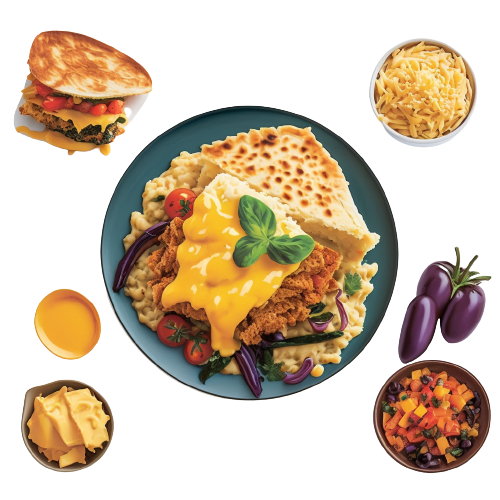

Looking for Delicious Recipes to Satisfy your Cravings ?

You've come to the right place! At ChaseYourCraving.com, we offer 8 hand-picked recipes, including everything from classic comfort foods to international cuisines.
Our easy-to-use search tool lets you find more recipes by cuisine, course, dietary restrictions, and more. Plus, you can save your favorite recipes for easy access later.
Check out the user reviews for each recipe to see what others thought of the dish.
Sign up for a free account today and start exploring all that ChaseYourCraving.com has to offer!


.jpg)


ChaseYourCravings.com is a must-visit website for anyone looking to explore new flavors and cuisines. From the mouth-watering Cheesy Mac Attack to the savory Mediterranean Moussaka, their diverse menu offers a wide variety of options for every taste bud.
I recently tried the Slow-Cooked Beefy Bliss from ChaseYourCravings.com and it was simply delicious! As an older woman, I appreciate when food is cooked to perfection and this meal did not disappoint. The beef was incredibly tender and the combination of herbs and spices in the sauce made for a truly flavorful experience.
What truly sets ChaseYourCravings.com apart is their exceptional customer service. Whether you have a question about a dish or need help placing an order, their friendly and knowledgeable team is always ready to assist. With their dedication to quality, convenience, and customer satisfaction, ChaseYourCravings.com is definitely the go-to destination for all your food cravings.
The best part about ChaseYourCravings.com is their commitment to using only the freshest and highest quality ingredients, ensuring that every dish is not only delicious but also nutritious. Additionally, their user-friendly website makes it easy to place orders and get your meals delivered right to your doorstep, saving you time and effort in the kitchen.

"Dream, create, and savor - that's the recipe for a fulfilling life in and out of the kitchen."
"Boy, let the flavor do the talking"
"Chef Christian's dishes are as sweet as his personality - irresistible and full of charm."
"A kitchen is a place where time itself is made with love, and Chef Shanna is the timeless master of the craft."